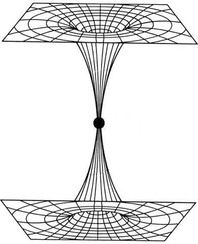
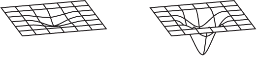
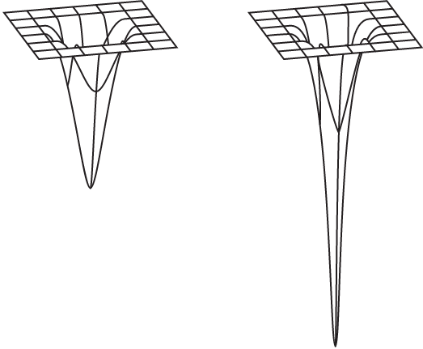

Gaming Like a Historian
An Ecological View
One of my insights into studying how to be a historian has been the following: move from the reductionist into the ecological. Explaining that requires unpacking a few things.
How we learn — and by "we" I mean all of us — is, to a very large extent, based on what things have in common. We quite literally depend on metaphor, on the recognition of patterns, on the recognition that something is "like" something else. And then we exploit that recognition to give ourselves more insights. I realize that what might seem out of place in that list is the idea of metaphor. Yet, on that very idea, consider the words of Aristotle in his On the Art of Poetry:
A good metaphor implies an intuitive perception of the similarity in dissimilars.
John Ziman's Reliable Knowledge: An Exploration of the Grounds for Belief in Science is, for me, an excellent book and in that book John points out that scientific insights often arise from just such realizations.
The behavior of an electron in an atom is 'like' the vibration of air in a spherical container ... the random configuration of the long chain of atoms in a polymer molecule is 'like' the motion of a drunkard across a village green.
All of this led me to the understanding that there's the reductionist view of reality and the ecological view of reality. A lot of work you'll come across in the historical field is of the reductionist sort. The reductionist viewpoint is the belief that you can understand reality by breaking it up into its various parts. John Lewis Gaddis, in his book The Landscape of History: How Historians Map the Past, says:
It's critical to reductionism that causes be ranked hierarchically. To invoke a democracy of causes — to suggest that an event may have had many antecedents — is considered to be, well, mushy.
True enough and people often don't like that "mushy" view. Thus people often turn to reductionism as a means of control. As Eelco Runia put it in Moved by the Past: Discontinuity and Historical Mutation:
The discipline [of history] puts a premium on "sorting things out," and [thus] consequently the history departments spit out specialists in organizing things who have somehow lost the capacity to tolerate messiness.
How I would phrase this is that, in this reductionist view applied to history, we are removing the "messiness" and the "mushy" bits and thus we are getting a bit of a sanitized view. That view removes some of the jagged edges of history and those jagged edges are often where uncertainty exists. In terms of motivation for a reductionist historical context, it seems that we feel like we're gaining some "understanding" of the "true history" by imposing controls on how that history must have played out.
An ecological reality, on the other hand, is one where you recognize that it's often difficult to break things up into their component bits because so much depends upon so much else. Again, quoting Gaddis:
For while the ecological approach also values the specification of simple components, it does not stop with that: it considers how components interact to become systems whose nature can't be defined merely by calculating the sum of their parts.
Speaking somewhat to this same point, Clayton Roberts, in his book The Logic of Historical Explanation, makes a lot of good points about the overall ecological view in history. For example, in accounting for what happened at Hiroshima on 6 August 1945, we tend to attach much greater importance to the fact that President Truman ordered the dropping of an atomic bomb than to the decision of the Army Air Force to carry out his orders. It's a bit of a harsh example but that's also what drives home the relevance of the point.
Another more recent example might be the 6 January 2022 insurrection at the United States capitol. Accounts have generally had much to say about how Donald Trump may have instigated certain people to take the actions they took, such as storming the building, but those accounts often have less to say about why people made their own volitional choices to take those actions, regardless of whether they were being incited to do so.
Ecological Views Lead to Unification
An important point is that ecological views lead to unification. This requires taking a bit of a deep dive into how that manifests, particularly in the sciences.
The Basic Idea of Unification
The general concept of unification is fairly simple. If we have two theories that explain two apparently different behaviors of whatever it is we're studying, it's sometimes possible to replace both of those theories with a single theory.
This is considered useful if that resulting single theory still manages to explain the different behaviors. Being able to do that is largely what's meant by unification. It may seem counterintuitive but it's generally the case that the resulting "unified theory" will be simpler than either of the previous two theories. The reason for this — at least in many cases — is because the unified theory is revealing a deeper, underlying truth.
As I alluded to, it's easier to draw this point home with the sciences rather than history. There is a valid pedagogical point to doing this, however, because many have tried to state that the practice of history is a science. I'll come back to that point and how it relates to some of these examples.
Some Examples of Unifiers
Consider Galileo Galilei. Around 1638, he realized that constant velocity was an underlying truth. Assuming such constant velocity, there was no experiment you could perform that would tell you whether you were moving or standing still. This essentially unified the ideas of "moving" and "stationary."
Consider Isaac Newton. Around 1665, he wondered if the force that kept the moon in orbit around the Earth (and the planets around the Sun) was the same force that tugged at objects on the Earth, drawing them toward the ground, such as an apple falling out of a tree. This unification — of the forces of celestial mechanics and earthly mechanics — led to the formulation of a specific force called gravity. This made people realize we can treat the events in space with the same mechanics that we do events on Earth.
Consider Michael Faraday. Around 1831, he showed that if you push a magnet through a coil of wire, an electric current flows. Similarly, if you pass an electric current through a wire it can deflect a nearby magnetic compass. The idea was that electric currents create magnetic fields and moving magnetic fields create electric currents. This was electromagnetism, effectively unifying electricity and magnetism.
Consider James Clerk Maxwell. Around 1885, he refined Faraday's work showing that an electric field would generate a magnetic field and, conversely, a magnetic field would generate an electric field. Maxwell specifically showed that these fields would reinforce each other in an oscillatory manner. Thus was the idea of a self-sustaining electromagnetic wave conceived. This was a wave that traveled through space. Since this wave traveled, it had a speed. When that speed was calculated, Maxwell found it was the same as the speed of light. This meant that light was a form of electromagnetic wave. The unification here was the field of optics (light) with that of the previous unification, electromagnetism.
Consider Albert Einstein. Around 1905, he combined Maxwell's results with Newton's laws. This showed that the speed of light did not depend on the motion of an observer moving relative to the light. Einstein showed that you could combine the law of motion of Maxwell with the laws of motion of Newton — if, that is, you were willing to consider space and time to be dynamic properties of the universe. This idea unified not just electromagnetism with mechanics but also space with time. As a side-benefit, this also unified the concept of mass with energy.
Unifications Show the Wider Ecology
What you might notice with the above list of unifications is that everything sort of builds on everything else. Later unificatoins don't throw away what came before; rather, they incorporate it. That iterative inclusion of previous unifications leads to a series of relations between concepts and that is what makes everything ecological in nature. Let's keep digging a bit to drive home this point.
In 1916, Einstein pulled a Galileo. Remember that Galileo talked about constant motion and that an object experiencing no forces will stay in its state of motion, where zero motion (or stationary) was just a constant motion of zero. Well, Einstein used that same idea and said that the force experienced by an observer undergoing constant acceleration was indistinguishable from the force of gravity that Newton talked about. So gravity and accelerated motion were unified.
But it even got a bit more interesting. It turns out that if objects were in free-fall they would not feel any force of gravity at all. But this meant that gravity didn't exist as a "force" in its own right; rather, gravity was the curvature of space. Objects traveling in a straight line in a curved space would appear to be drawn towards the center of curvature. This motion of being drawn along lines of curvature can thus be interpreted as the force of gravity!
So here the unification was the notion of gravity with the geometry of space itself. And since time was already linked with space, via previous unifications, this meant gravity — or, rather, curvature — could impact time as well.
So one thing to notice here is that as we keep going along these lines of thinking, the unifications get a little less intuitive, a little harder to reason about. But they are all critically important. In fact, I want to come back to Einstein's specific work in a bit but, for now, let's consider one more stop here which will certainly reinforce the "less intuitive" point.
In the 1960s, when the study of particle physics was really heating up, there was a perceived symmetry between the particle associated with electromagnetism (the photon) and the previously theorized-about nuclear force. When finally discovered, the particles associated with the latter force were given the odd names W+, W-, and Z. The idea was that all four particles would be massless — thus all symmetrical — at high energies. But as the energy steadily decreased, this symmetry would be broken and the particles would take on different values and thus be discrete things.
As it turned out, the photon was left with a mass value of zero but the W+, W-, and Z particles all ended up with some non-zero mass value. What this meant was that this nuclear force could only operate at short ranges. In fact, it's called the "weak nuclear force" for that reason. Whereas massless photons, as part of the electromagnetic force, can carry light across the entire universe and thus their range is obviously quite long.
The point here is that the two forces of electromagnetism and the weak nuclear force were, in fact, the same force behaving in two very different ways at the low energies that we human beings are mainly aware of and can experience. But if we have a realm that is sufficiently energetic enough, and thus hot enough, the electromagnetic force and the weak force would merge into a single force. This force was eventually proven to exist in the 1980s and was called the electroweak force.
Again, notice how even this one more leap up the unification chain took us into even greater realms of complexity. In fact, it took a good amount of effort to even recognize the unification, much less reason about it. Yet this greater complexity is actually about a concept that is providing more simplicity for the overall picture. Dealing with that particular balance takes good practitioners of a discipline.
Finding "Is Like" Takes Good Practitioners
What happens in all of the above cases is the use of imagination in terms of saying how something might be "like" something else; as in, "Hey, maybe it's the case that accelerated motion is like gravity." Unification, which is a refined form of saying what something "is like," requires having a certain amount of intuition that you harness to gather insight. In this context, I think it's important to note something that Andrew Thomas says in his book Hidden in Plain Sight:
The ideas by which unification is achieved are generally extremely simple ideas — anyone understands these ideas. In fact, we could say that any unifying idea has to be simple.
Speaking in the context of the examples I provided above, Andrew says:
It was as if these great unifiers picked up on something which was under our noses all the time, something which was missed perhaps because it was too simple. Something hidden in plain sight.
How does this relate to the historical focus that I'm mainly concentrating on?
I don't so much believe that history holds much that is "hidden in plain sight" necessarily but I do think the unification concept, and thus the ecological thinking that leads to it, allows us to hone our skills in ideas like deriving processes (what happens in history) from structures (what history leaves us to investigate), fitting representations (a way of viewing what happened in history) to realities (what actually happened in history), as well as learning to privilege neither induction nor deduction.
In fact, on that last point, I think abductive reasoning is a large part of what we seek. Thus I believe that historical reasoning is not just about confirmation or falsification, as in the sciences, but rather about implausification. I think it's worth considering the words of Sabine Hossenfelder in her excellent book Lost in Math: How Beauty Leads Physics Astray:
What I learn, however, is that Karl Popper's idea that scientific theories must be falsifiable has long been an outdated philosophy. I am glad to hear this, as it's a philosophy that nobody in science ever could have used, other than as a rhetorical device. It is rarely possible to actually falsify an idea, since ideas can always be modified or extended to match incoming evidence.
Sabine expands on this point a bit when talking about our ideas in general:
We "implausify" them: a continuously adapted theory becomes increasingly difficult and arcane — not to say ugly — and eventually practitioners lose interest. How much it takes to implausify an idea, however, depends on one's tolerance for repeatedly making a theory fit conflicting evidence.
I think this idea of "ugly" here can fit in well with the ideas of "mushy" and "messiness" from earlier. Beyond that, if there's one thing history often does, it presents us with conflicting evidence. And if there's one thing some people do when studying history, it's try to make some pre-existing theory fit with the evidence they are finding.
A consequence of that is that people are often led to a selective bias in the evidence that they accept which, in turn, leads to a compromised view of standards of evidence. And, looked at in that way, certainly we can say that history "is like" science.
Does History Become Scientific?
Previously I said that "many have tried to state that history is a science" and it's worth perhaps exploring that a bit, particularly given that I just spent a whole lot of time talking about science ideas. But then I ended, quite deliberately, by saying that history is like science, as opposed to saying history is science. It's worth asking if there's a spectrum between "is like" and "is" in the ecological view.
Tom Griffiths, in his book The Art of Time Travel: Historians and Their Craft, has a good take on where scientists and historians align:
After the development of Einstein's general theory of relativity in 1915, it became meaningless to talk about space and time as absolute, as transcending the limits of the universe; instead, they became dynamic qualities of the universe itself. In effect, the universe became finite and historical; it was no longer unchanging but had a beginning and an end — a life. Without absolute time, each individual has their own personal measure of time that depends on where they are and how they are moving. Physicists and historians agree on this.
Indeed they do agree on this. Time and place are the cornerstones of history. History requires a setting, a place, in which events take place. Events, of course, are structures of time. And structures persisting in time are what dictate chronology and causation.
So here the humanities, in the form of history, and the sciences agree. Does that mean they are in alignment? Does that mean "is like" has shifted to "is"?
Here it's worth pointing out that established historians like Marc Bloch, E.H. Carr, Donald Akenson, John Gaddis, Keith Hancock, and John Fea have all recognized that the idea of the humanities in general, and history in particular, becoming "scientific" was an enterprise that was tried and has effectively failed. History, inherently, has more subjective elements than objective. And while history can teach us lessons about what might happen, based on the past, it would be hubris to suggest that it's predictive about human cultural and social changes.
Subjectivity and contingency are critical aspects of "doing history" which differs quite a bit from the broad practice of "doing science." Yet there's something interesting to consider here. Professor R.W. Davies said the following about E.H. Carr's thoughts:
It is evident that Carr had come to the conclusion that the relativity of scientific knowledge was greater than he had previously suggested. Time and place exert great influence on the theory and practice of the natural scientist. The interplay between hypothesis and concrete material in natural science closely resembles the interplay between generalization and fact in history. Valid scientific hypotheses do not necessarily possess the capacity for precise prediction which is often attributed to them; in some natural sciences they closely resemble the generalizations of the historian.
The bolded emphasis is mine. What I take from these thoughts is that while history should not be practiced as if it were "scientific", the idea of how the sciences are practiced can certainly inform our musings about, and research into, history.
Lee Smolin in his book Einstein's Unfinished Revolution: The Search for What Lies Beyond the Quantum said something that brings these thoughts together for me:
To have a scientific mind is to respect the consensus facts, which are the resolution of generations of dispute, while maintaining an open mind about the still unknown. It helps to have a humble sense of the essential mystery of the world, for the aspects that are known become even more mysterious when we examine them further. The more we know, the more curious it all is.
This, to me, very much sounds like a style of thinking we can apply to the context of a historian. So perhaps it's not so much that history "is like" science but rather that doing history "is like" practicing the scientific method. And if that's the case, and I do believe it is, then there is perhaps a logic that we can apply to being a historian and practicing historical thinking.
A Logic of Historical Thought
There is a play from 1980 called "Translations" by Brian Friel and one part of it always stuck with me, which is shown in the following dialogue:
Owen: What is happening? Yolland: I'm not sure. But I'm concerned about my part in it. It's an eviction of sorts. Owen: We're making a six-inch map of the country. Is there something sinister in that? Yolland: Not in... Owen: And we're taking place names that are riddled with confusion and... Yolland: Who's confused? Are the people confused? Owen: And we're standardising those names as accurately and as sensitively as we can. Yolland: Something is being eroded.
The context here is that Owen comes to a certain small Irish town with a group of Royal Engineers. Their job is to map the Irish countryside. As part of this project, Owen helps this group "anglicize" the Irish town names. Yolland, however, who is one of the engineers, ends up becoming extremely interested in Irish culture and believes that the work being done is an act of destruction.
In one sense the play is about the relationship between language and culture and I risk drastically simplifying the play by focusing on just one aspect here. That aspect is the erosion of a particular culture by the way it's talked about but also in terms of what's done to it, particularly by those who are part of the culture. In the words of Yolland, I do believe something is being consistently eroded with the discipline of history, particularly when it comes to the gaming context that I'm going to be focusing on and even for the wider computing context.
Just to put a little meat behind that last statement, a lot of the history of computing gets wrapped up in Silicon Valley or focused on either Apple or Microsoft. But there's a lot of history showing that very interesting things were going on all over the country and with many different companies. It's also the case that a lot of the history of gaming gets swamped under large milestone games, like say Adventure or Ultima, without taking into account the many preceding games that show paths of development.
The history gets eroded and, bringing in some of my thoughts from earlier, this is because the history gets sanitized and streamlined. The messiness and the "mushy" bits and the "ugly" parts get plastered over with a more anodyne view of how things developed.
My thoughts here are perhaps summed up well by Stephen Toulmin in his book The Uses of Argument:
To think up new and better methods of arguing in any field is to make a major advance, not just in logic, but in the substantive field itself.
In fact, this reminded me of something else I read in Max Weber's On the Methodology of the Social Sciences:
The poor condition of the logical analysis of history is shown by the fact that neither historians, nor methodologists of history, but rather representatives of very unrelated disciplines have conducted the authoritative investigations into this important question.
I can't speak for the wider venue of historical thought but I can say that in the historical research done into gaming there are a lot of fans and/or academics from other disciplines attmempting their hand at history. This idea is brought up a bit in Jon Peterson's book The Elusive Shift: How Role-Playing Games Forged Their Identity:
Academics eventually began exploring the theory of role-playing games ... but practitioners have never entirely relinquished their claim on this endeavor.
In this context, Peterson brings up the thoughts of Evan Torner who made a distinction between "para-academics" and "aca-fans." The history of gaming is full of people on both sides of that spectrum but I think it's often been the case that, to use Weber's phrase, it's the "representatives of very unrelated disciplines" that actually have more to say in a way that avoids the erosion problem.
I think there's two reasons for that. One is that people from the unrelated disciplines are better able to use a logic to their historical approach because of their relative distance to the subject matter. They approach gaming and computing as historians first; not as gamers or computer scientists looking to write some history. I also think such people are more willing to look at previous historical errors rather than just repeating existing accounts of history.
Along these same lines, another idea that resonated with me was that of Alan Simpson from The Wealth of the Gentry where he said:
Our present state of knowledge is one of mitigated ignorance. In such situations, the honest enquirer always has one consolation — his blunders may be as instructive as his successes.
I came upon that reference as I was re-reading David Hackett Fischer's Historians' Fallacies: Toward a Logic of Historical Thought, which talks about the mistakes people make in their thinking. The idea of the blunders was interesting to me. Fischer's book in particular has been a huge influence on me and you'll note his subtitle is the title of this section. On that point, Fischer says:
Assuming that [a] logic of historical thought does tacitly exist, the next question is how to raise it to the level of consciousness.
That's largely been my focus as well, but in the gaming context in particular, which I've long been fascinated with, and the wider computing context in which it's situated. As far as a method to the madness, Fischer continues:
If there is a tacit logic of historical inquiry, then one might hope to find a tacit illogic as well, which reveals itself in the form of explicit historical errors. On this assumption, I have gone looking for errors in historical scholarship, and then for their common denominators, in the form of false organizing assumptions and false procedures.
So there it is: instead of finding the logic of historical thought by looking at the cases of it being practiced, instead look at the cases of it not being practiced and work from that. And this brings to mind the words of Willard Van Orman Quine in Methods of Logic:
Truths are as plentiful as falsehoods, since each falsehood admits of a negation which is true.
But why do this? Why take this particular methodological approach? Well, again going with Fischer's idea:
First, [a classification of errors] may clearly indicate a few mistaken practices that are not sufficiently recognized as such. Second, [the classification of errors] might operate as a heuristic device for the discovery of a few constructive rules of reason.
One of our challenges here is that there are a near infinity of wrong ways to do things but there is usually no one right way. There are, instead, a plurality of right ways. Yet it's also a truism that of those infinity of wrong ways, we tend to see only a finite number of them actually occur with any sort of regularity. So we can reduce the scope of the investigation in that sense. We thus have a plurality of right and wrong ways to consider and perhaps to contrast each other with.
That point also speaks to a wider goal: it's not just to look at the errors we tend to commit as part of our historical discipline, but rather the ways we start to (often gradually) slide into error. Our slippery slopes can be so gradual that we barely notice slipping into error and thus we have the gradual, perhaps barely noticeable, degradation of our evidentiary standards.
In a discipline that requires experimental verification, you might be able to course correct for some of that degradation to keep yourself honest. But this is less the case in a discipline that relies more on the implausification that I talked about earlier.
I want to be clear that what I'm advocating here isn't a clarion call for logic at all costs and a "scientific" approach to looking at gaming in the context of history. Rather, as Fischer says:
Though logic can distinguish error from truth and truth from truism, it cannot distinguish a profound truth from a petty one. A good many historical arguments are objectionable not because they are fallacious but because they are banal, shallow, or trivial. As a remedy for these failings, logic is impotent.
Okay, so logic by itself may not work as well in a situation where implausification is more important than confirmation and falsification. Yet the notion of the scientific method, or at least thinking somewhat scientifically in that sense, presumably still makes sense. Here I find myself going back to something that Karl Popper said in Conjectures and Refutations:
The way in which knowledge progresses, and especially our scientific knowledge, is by unjustified (and unjustifiable) anticipations, by guesses, by tentative solutions to our problems, by conjectures. These conjectures are controlled by criticism; that is, by attempted refutations, which include critical tests.
When reading that it's worth keeping in mind the words of Sabine Hossenfelder I mentioned earlier, regarding the lack of utlility of falsification as a guiding principle. But here we're led away from falsification as some idea to "prove something wrong" and rather we just focus on how to put our ideas to the test. The quality of the test we can put our ideas to — how much we can historically figure out — perhaps is what guides us along the spectrum of plausible to implausible.
I think that idea is broadly applicable to the humanities and the sciences. I think that way of framing our thinking applies not just to how we do our work as putative historians, but also how we think about our work; how we test our own assumptions and biases in terms of our historical discipline — how we practice it as well as how we promote it. So I think it's really important to keep in mind the idea of "conjecture" from Popper. This is not something that is amenable to or enhanced by any sort of logical analysis.
I'm about to tie all this together with the ecological approach I started with. Going back to John Lewis Gaddis, in The Landscape of History, he says:
History as a discipline is the means by which a culture sees beyond the limits of its own senses. It's the basis, across time, space, and scale, for a wider view.
A wider view: shades of the ecological approach talked about earlier. But that wider view has another meaning as well, I believe. To that point, John Dalberg-Acton (sometimes better known just as Lord Acton), speaking about history, said this:
History is not only a particular branch of knowledge, but a particular mode and method of knowledge in other branches.
And that "other branches" bit in turn goes back to that idea of people in other disciplines having just as much to say about history as those who might be rooted in those disciplines.
In some ways, I think Dalberg-Acton's point is very much the calling of history, as it were. This is a point I will come back to later. For now I'll say that history, as a discipline, is rooted in storytelling, narrative and experimentation. Thus historical thinking is a mode of thought and being that has existed since humans began to reason about their place in the world and the artifacts they create and leave behind in that world. Here's one more thought from Fischer:
To argue that there is a tacit logic of historical thinking is to assert that every historical project is a cluster of constituent purposes, and that each of these purposes imposes its own logical requirements upon a thinker who adopts them. Whether the purpose at hand is to design a proper question, or to select a responsive set of factual answers, or to verify their factuality, or to form them into a statistical generalization which itself becomes a fact, or whatever — it always involves the making of purposive and procedural assumptions that entail certain logical consequences. Every historian must learn to live within the limits which his own freely chosen assumptions impose upon him.
I very much believe we have to look at history as that "cluster of constituent purposes." The logical requirements of those purposes demands a distinction between actual historian and someone who is just, say, chronicling. Speaking specifically to the gaming context, we have had a lot of chroniclers, but not so many actual historians. We have had a lot of conflating of those two terms.
Gaming and the Human Element of History
As someone taking a historical point of view, we have to be aware of various freely chosen assumptions that we make. We have to be able to consistently, and persuasively, articulate the logical consequences of those assumptions. And, perhaps most importantly, we have to learn how to live within the limits of certain very constrained assumptions that we impose upon ourselves.
Somewhere around 1932 Albert Einstein said:
Science as something already in existence, already completed, is the most objective, most impersonal thing that we humans know. Science as something coming into being, as a goal, however, is just as subjectively, psychologically conditioned, as all other human endeavors.
The reason I find that quote interesting is because it brings to the forefront the idea that there is a notion of "work being done" versus "work that is being verified." There is an interplay of the objective and subjective there that I find extremely interesting as these are two polarities we often have to jump between.
I was reminded of the above quote while reading the book Einstein and the Quantum by A. Douglas Stone. The author asserts that when learning physics it's often the case that the "history that is mentioned is sanitized to eliminate the passions, egos, and human frailties" of the physicists of the past. The point being that many people simply want to get to the science parts, without worrying necessarily about the human element that makes the "science parts" possible. Continuing on from that point, Stone says:
After all, since physical science (we believe) is a cumulative discipline, why shouldn't we downplay or even censor the missteps and misunderstandings of our predecessors?
The idea here being that it's the outputs of the discipline that ultimately matter, not necessarily the many false starts that got us to where we are. Whereas, instead, I would argue that our blunders are exactly one of the things we should be studying more of, which reinforces a point I stated earlier. Continuing along this idea, which I should note, Mr. Stone is actually arguing against, he says:
Wouldn't telling the real human history of discovery just confuse people?
Or, would it, in fact, make the discoveries themselves more discoverable and understandable — maybe even relatable! — by considering how they are the output of human creativity and innovation? I want to note again here that the author is actually arguing against the viewpoint and this was based on an epiphany he had. But I had the exact opposite feeling towards the epiphany. So, first, what is that epiphany? Putting it simply, just about everything is in the past — and the most interesting parts of the past — are how people interacted in it. We often have the outputs of history but we can't recapture the exact history as it happened. Unlike most science, history is not a repeatable experiment. But we can, however, represent history. And we can fit our representations to the reality we encounter.
That last point is crucial to what I'm working on now — a history of ludic concerns. This, however, requires a broad view of what historians do. The discipline of history is often taken to be much simpler than it is. In fact, historians are often asked why social scientists don't simply just do their job. The simple answer to that is that this approach has failed. I haven't rigorously set out to prove that here but I hope some of my above thoughts, and references, get you thinking along those lines.
The Legibility of History
There is a distinct aspect to any discipline that suggests you can make something "legible." But what does that actually mean?
What this notion of "legibility" means is that you make something measurable and hence manipulable. This is how we attempt to impose and maintain authority, and thus control, over something. So we preserve the past by making it legible and retrievable and we presume to do this for the present, which then lays out a roadmap for the future.
That sounds a little deterministic, right? This search for legibility is, in many ways, an imposition of general uniformity. And that tends to diminish local diversity. Anything universally applied tends to submerge localized knowledge of how things actually work. The imposition of any sort of methodology like this risks the imposition of uniformity which is distinct from unification and, thus, it seems to have us fall into the reductionist rather than ecological viewpoint.
What this shows us is that attempts to make history "legible" tend to fall into the same traps as when we try to make history "scientific."
History is Like Cartography
Just about everything discoverable for us is in the past. That's the case on any area you choose to tackle, regardless of what method or approach you use. The future is coming into being but it's doing so on the back of the past. And that past keeps growing and growing. So quite literally everything we rely on is in the past.
Even the very moment of "now" became the past just as you read this. As the future gets here, it becomes the "now" and — you guessed it — moves into the past. So while the people we study may design and build games for the future, all that work immediately becomes part of the load-bearing struts of the past.
Since most of everything is in the past this means that what we study — or, rather, the history of it — is necessarily a representation of reality. This is very similar to cartography.
What do maps do? Well, let's think about how they great created. They get created by humans. So maps essentially distill the experience of others for the purpose of helping you understand a particular terrain. Maps help you get from where you are to where you want to go. Maps thus serve as a way to package up a vicarious experience by providing a representation.
Cartographers are people who create maps and it is very much a discipline. Further, it's a discipline that shares a lot with those who practice history.
Consider the idea of the coastline paradox. This paradox is often stated in the context of Lewis Richardson's “how long is the coastline of Britain?” question.
The answer is that there is no answer or, at least, not just one answer. The answer is contextual.
The idea of the "paradox" being that the further down you go in your scale of measurement, the more irregularities of coastline you will encounter. This means that the length of coastline you measure can expand (or contract) in relation to the way that you're measuring it. Yet, of course, the actual reality of the coastline is not changing, right? After all, the coastline is there. So what does this tell us?
It means that we can choose to precisely delineate but we can also choose to generalize and abstract. This is how we create a representation of truth. But a key point that often gets left off is that our particular mode of representation determines whatever it is that we're representing. How we choose to measure or deal with something is important and impacts what we are measuring. This is very much like the famous uncertainty principle in physics: the act of observation alters what's being observed.
Thus here I seem to be suggesting that history perhaps is something we measure — and thus make legible — and that it does perhaps have some corollaries with science.
Grid Lines on Space and Time
Let's consider what cartographers do. In a very real sense they reduce the (potentially) infinitely complex to a finite, manageable, frame of reference.
Doing this involves the imposition of artificial grids — longitude and latitude — on spatial landscapes. This is similar to how historians place artificial grids — years, centuries — on temporal landscapes. And, of course, within that temporal context, history is very concerned with social structures and artifacts that are various spatial locations.
A problem here is when we attempt to take a cartographic stance to history — to, in effect, "map the past" — what we do is lay down a sort of grid that can stifle particularity and privilege the legibility just talked about. And that's all done in service to the idea that we want to make the past "accessible" to the present and allow that quality of accessbility to better inform us about what may have "actually" happened.
Now, I just said stifle particularity and privilege legibility. But isn't that exactly what we want from the standpoint of making maps? We don't want each person's nuance to come out when they make a map, right? And we certainly want legibility, don't we?
Yes, in that context, we probably do. But consider that another way to look at map-making, and thus cartography, is an attempt to reclaim a sense of the entirety of something. Yet what we reclaim can never be that thing. Put another way, to try to represent everything that's in a particular landscape would be just about as ridiculous as attempting to recount everything that actually happened during a given period of time. Such a map, like such a recounting of events, would have to become what it represented.
So cartographers have to avoid a full, literal representation in making maps. Obviously if you had a fully literal representation you would have the thing itself. This is a similar challenge we face in historical concepts for very obvious reasons. We are dealing with things that are made up of space and time and people acting within that space and time. To model that literally and exactly would likely require a time machine.
Given all that, how then we do we capture truth about our terrain or our historical moments if we're saying that we can't, and in fact shouldn't, attempt to represent the entirety? Well, looking at this from the cartographic viewpoint, we can see that having a model with literal fidelity to what it represents means that we lose the distillation; we lose the element that transmits a vicarious experience.
Verification and Verisimilitude
The notion of "verification" in cartography takes place by fitting representations to reality. So you have the physical landscape, but, as we just talked about, you wouldn't want to try to replicate that actual landscape.
You have, in your mind, reasons for representing the landscape in a certain way. You want to give people the information they need for the purposes that the map is used for. And you want them to find their way through the map without having to rely on their own immediate senses. That's why they are reading your map to begin with: to draw on the generalized experience of others. And keep in mind: they have the map itself, which results from fitting together what is actually there with what the user of the map needs to know about what is there.
The fit becomes more precise the more the actual landscape is investigated. Historically, the first maps of any newly discovered are are usually going to be fairly crude representations. But as exploration proceeds, the features of the map will become more specific. But people will have need of the map for different reasons. Some might want the quickest route. Others might want the scenic route. Others might want a route that showcases “interesting” things.
The point is that, as time goes on, there will be multiple maps of the same area. Those maps will be prepared for different purposes.
Cartographic verification is, therefore, entirely relative: it depends upon how well the cartographer achieves a fit between the landscape that's being mapped and the requirements of those for whom the map is being made.
And that is exactly true of historty as well. The artifacts we leave behind on our work — such as the games themselves, design notes, and so on — serve as information that can be incorporated into "maps" of our terrain. They provide a means for us to reason about where things were at a certain point, how they evolved and spread, and where those things ultimately ended up.
Representations and Choices
Maps represent realities they can't entirely replicate. Maps vary the scale, the scope, and the content according to user need, which means maps are created based upon a set of choices.
The same applies to our historical writings. We choose to write on particular elements of history — and choose to write in particular ways — because we believe those options are better than other options. A key point that anyone writing about history needs to understand is that your writings live on; they serve as certain representations of reality and are used as yet other "maps" later on for others working in the same area.
Maps are never free from preconceptions. There's always some prior reason for what is and is not shown. The same applies to any historical writing. We choose to limit what we represent. This very act of limiting, however, is predicated upon the preconceptions we bring as to what we think is important or what will be necessary to know in the future.
And, ultimately, we evaluate maps according to their usefulness. We ask things like: Is the layout of the map legible? Is the representation credible? Does the map extend our perceptions beyond what we ourselves can manage? If the answers to these questions are positive, that means the map performs the practical task of getting us from here to there. The same applies to our historical writings. We're trying to get people, our even just ourselves, from here and now back to the time when the history itself was being created.
The Calling of History
The art of working with history is you engage in a constant dialogue between evidence from the past and the present experience of that evidence. History is effectively a dialogue between the present and the past that never ends.
Practicing the craft of history brings to bear intellectual, artistic and technical skills making it a systematic and reflective discipline and one that can honed into a craft. One common definition is provided by the Dutch scholar Johann Huizinga who said that history is "the intellectual form in which a civilization renders account to itself of its past." While it's certainly true that historical study has academic traditions and scholarly conventions, there's also an element of joy to it. Or, at least, there should be.
This reminds me of something Donald Akenson said in his book Surpassing Wonder regarding biblical scholarship.
When one immerses oneself in recent scholarship concerning the Bible (meaning work done since the end of World War II), the effect is curiously anesthetic, even depressing. Hardly anyone seems to be having any fun, and if they are, they do a good job of keeping their pleasure well hidden behind stone faces and dirge-like prose. Instead, it seems to me that biblical scholarship should be one great ode to joy. ... Yet, in biblical scholarship and its associated disciplines one finds (with a few wonderful exceptions) little sense of excitement.
I find much the same with people writing about history in most cases, even something like gaming history. The following is perhaps apropos of that:
I often think it odd that it should be so dull, for a great deal of it must be invention.
This sentiment was expressed by Jane Austen's character Catherine Morland on the subject of history in Northanger Abbey.
For many writing about history, you could be forgiven if you came to the impression that they thought history was quite dull as well given how they write about it and thus they invent whatever they need to or, at the very least, become very uncritical of distinctions around substantiated historical evidence, plausible historical perspectives, and strongly argued, evidence-based interpretations of the the evidence and perspectives.
The words of James Banner, in his book The Ever-Changing Past: Why All History Is Revisionist History, are quite relevant here:
It ought to be bracing that many people understand enough of the origins, uses, and satisfactions of historical knowledge that they engage with continuing curiosity and pleasure in the play of reasoning that is part of all historical thought and accept with ease the provisionality of historical interpretations that are available to them.
I like the idea of cross-associating disciplines and thus these words of Tom Griffiths, in his book The Art of Time Travel: Historians and Their Craft, ring quite true for me when he likes the act of writing to a form of sculpture.
In writing history I find that one must first amass the clay, the raw material of reality, building up the rough form, gathering much more than one can eventually keep. Then begins the careful paring away, the sculpting and moulding, the tweaking out of detail. The final reality emerges, and one could believe that it was always there, trapped in the clay, awaiting discovery and release.
Getting to that "final reality" — which, let's be honest, often isn't truly final — is an amazing journey. An Australian professor named David S.G. Goodman said that historians have been "the last of the generalists, the last of the bearers of a general interest in the whole of society and culture, or in any of its parts." I very much agree.
What I also often find in historical writing is something that Jon Peterson brings up in his book Playing at the World.
Similarly, and with some small regret, this history overlooks many rumors, legends and allegations of a more personal nature concerning the protagonists in the narrative. ... Including that sort of material here would require adding a more sensational layer to the work. ... Those elements bring a meanness to the story which is incompatible with the calling of history.
This too is something I find done quite often. People get mired in the history of companies, like Microsoft, or the foibles of people, like Steve Jobs or Jack Tramiel, and forget that if they are writing as historians, they are not here to judge but to report and to help us understand the context of the past.
History is both subtle and complex and thus it should force upon us the idea of being humble and contextual as we reconstruct it, working not to intrude our own values into it. Thus I turn again to the words of Tom Griffiths:
History is sometimes depicted as a static, hidebound package of dates and facts, already given, that must be learned. Anyone who researches and writes history, however, discovers that the past is alive and shifting. It is both elusive and malleable. Its chameleon quality is disturbing and raises questions about ethics and responsibility. One learns to draw on the past delicately and with a sense of responsibility.
Thus I turn again to the words of James Banner:
If all historical knowledge is to some degree uncertain, partial, and open to debate and alteration, especially in a democratic society where reason is free to combat error, how are we to have any confidence in what is taught to us as history? How do we avoid slipping into the cynical error of concluding that historical knowledge is not worth much because it is never fully certain? How do we avoid the equally serious relativist error of thinking that because people differ about the past, all interpretations of it are equally valid? How, that is, should we think about both the provisionality of historical knowledge and its always changing richness and utility? How should we look on the never-ending debates among historians as they go about creating new knowledge and refining, revising, and challenging existing knowledge (which means disagreeing with each other) in their search for dependable understanding of the past?
Even in such a specific field as gaming you will find a lot that is provisional in nature, particularly the further back you go. We have certain solid facts that we can hang our hats on but there is much else that is very situational and contextual, where those situations and context remain clouded to our present-day viewpoint.
My Historian Approach
The above section was a broad outline of the influences that I've felt and internalized as I've practiced historical writing. In this section, I'll follow that up with a bit more specific details on how that calling of history is informing my approach to the history of ludic studies and thus gaming.
There are a couple of focal points here, particularly given that I spend a lot of time on games with story, even if only the inklings of such. Thus I get into (hi)story. That semantic construction is quite deliberate.
"History" and "story" were both borrowed from the same Old French word (estoire) within a century or two and were completely synonymous for a couple of centuries. In Danish, and some other Scandinavian languages, this is still the case. The term historie can mean "history" or simply "story," depending on the context. The same is true in the case of the German Geschichte.
The English word "history" also derives from the Greek historein, meaning "to inquire." In this context, of course, I'm referring to the inquiry about past events and those inquiries often lead us to craft stories about the past. William G. Dever, in his book Has Archaeology Buried the Bible?, had this to say:
History is thus essentially storytelling, presuming of course that the stories are true — that they purvey a reasonably accurate account of what really happened in the past.
Yet that "really happened" but does require a bit of qualification. And Donald Akenson provides that very well. On the subject of what historians do, Akenson says:
First we try to get a rough idea of what "really" happened, all the while recognizing that all historical writing is merely a series of heuristic fictions and that both complete adequacy of description and complete accuracy of "fact" is beyond the bounds of the possible. Second, and more important, we spend our time studying what people think happened.
Put another way, a lot of times I've found the history I'm recovering is really a set of stories that were serving as someone else's history writing at one point. And in most of those cases, what I'm covering really wasn't written as history, per se, but rather just the encoding of events as people saw them in that moment. This can mean that any given area of history that we focus on can appear to be a meaningless jumble of unrelated events. But historical study and understanding is, by definition, working with a theory of change. So it's crucial to understand three quite distinct, but often related, disciplines.
- Ontology is about what things are. (Think "theory of being.")
- Epistemology is about the way we know things. (Think "theory of knowledge.")
- Ontogeny is about the history of changes that preserve the integrity of something. (Think "theory of identity.")
All of those, at their core, embrace a theory of change since what something is — the ontology it fits into — can change. The way we know things, and our standards of evidence, can change. And even when something retains a core identity, there can be still be localized changes relative to it.
Certainly the most compelling history has a large component of storytelling involved but with an equal emphasis on evidence being provided for the narrative that's said to reflect actual events. Historical tellings, and re-tellings, are always subject to interpretation. That interpretation can sometimes lead to embellishments, exaggerations, and outright inventions. On this point, James Banner called for the following:
[A] recognition of historical understanding as a fluid body of knowledge open to many readings and carrying many varied meanings despite the normal human desire for stable, unchanging knowledge that can be relied on as indisputable. History is not and has never been inert, certain, merely factual, and beyond reinterpretation.
All of the above notions influence how I approach this history of story in the context of gaming. Siegfried Giedion talked about an essential part of the "anonymous history" of a given time, which I think is the case with a lot of gaming context. That context is not quite, in the words of Giedion, studying "some faintly known epoch that has left no documents" but it is a context where we have plenty of chronologies and references but the contextual bits that surround those are often very separated or entirely absent, leaving us, in the words of Jon Peterson in Playing at the World, to sometimes "grudgingly crib from the faded ledger of reminiscence."
As part of my research, I've found a sentiment from Melanie Swalwell in her book Homebrew Gaming and the Beginnings of Vernacular Digitality that I happen to share:
I have had to make it my business to search for what was considered unlikely to be worth remembering and often has largely been forgotten. Traces of unofficial, ordinary culture do not always show themselves readily.
There's also the notion of people who are referred to as crypto historians. These are people who tend to represent some given historical aspect as unprecedented; a unique phenomenon that brought about some imminent transition into a culture. I think this kind of "crypto history" does underlie much of gaming history.
On that latter point, I've found some cautionary aspects. It's certainly possible to fall into some traps by seeing the present as an implausibly radical break from the past. A certain way of looking at changing technology, for example, tends to obscure as much as it reveals, promoting — or lamenting — present events as fundamental departures from the past rather than recognizing continuities with the past. That said, it's also possible to go the other way: to assume that some aspects of the present are a continuous line with the past when sometimes, in fact, there were radical breaks.
Doing all of this researching, collecting the ephemera that I can, and writing about all of it became an effort to substitute for my childhood excitement at gaming in general, which continued into my adult years, and my much earlier love of good storytelling. The older version of myself sees this as an intellectual pleasure of producing insight and preserving the meanings of the past through their historical interpretation.
A General Historical Approach
Edward Carr, in his book What Is History?, pointed out:
Millions of people over thousands of years have crossed the Rubicon. We decide which ones to write about.
Certainly this is true in that we are selective when we choose what to study or write about concerning "what happened" in history. The challenge, as brought up earlier, is that "what happened" is often a matter of reconciling viewpoints. Those viewpoints can differ as time goes on. What people who study the past as a historian must do is build up the capacity for varying levels of selectivity and of simultaneity, shifting the scale of consideration easily between those modes.
This means that the historian can and must select from a cacophony of events to provide a focus on what they think is really important given whatever they're trying to elucidate or elaborate. That selection process is fairly crucial to understand however. James Banner made a good point on this:
Since historians always have some purpose in writing their histories, written history is always intentional — an effort to understand and present a rendering of a subject more complete than previous historians' understandings of it and thus different from what was previously understood. That is, since every historian, by virtue of possessing a distinct mind, disposition, perspective, and purpose offers a particular "take" on a subject or issue that, by the very fact of existing, is a unique expression of that historian, all historians come to their work with the aim of bringing their own selves and no one else's to bear on the subject at hand. Even a history that is a mere chronicle of facts can offer a fresh look at the past by its selection of those facts.
To attempt this selection process, a good historian can, metaphorically, be in several times and in several places at once as they consider varying levels of time and space. This also means that the historian can zoom in and out between macroscopic and microscopic levels of detail based on need. Going back once again to a previous point, at all of these levels, a core focus is not always so much what actually happened but what people thought actually happened or how they chose to record what they thought actually happened.
Tom Griffiths made a good point about another aspect of this shifting of detail:
So here is our double historical quest: to be astonished as well as to understand. This tension goes to the heart of the historical enterprise — a tension between the past as familiar (and continuous with our own experience) and the past as strange (and therefore able to widen our understanding of what it means to be human).
Griffiths also says:
The essence of good history is this balance between empathy and perspective, intimacy and distance. Historians immerse themselves in context; they give themselves wholly and sensually to the mysterious, alchemical power of archives. As well as gathering and weighing evidence, piece by piece with forensic intensity, they sensitise themselves to nuance and meaning, to the whole tenor of an era, the full character of a person.
One last point from Griffiths, who clearly very much influenced my thinking:
Historians move constantly between reading and thinking their way into the lives and minds of the people of the past — giving them back their present with all its future possibilities — and seeing them with perspective, from afar, with a bracing sense of their strangeness.
This notion of "their present" and a retaining of "future possibilities" as it would have been back in their present is crucial to a point I'll eventually come to regarding the idea of a historical singularity.
Geoffrey Elton, in his book The Practice of History, said:
What we call history is the mess we call life reduced to some order, pattern, and possibly purpose.
Certainly in the context of gaming there is a whole mess of material, much of which was not necessarily very well-recorded at the time the history itself was being made. What we often have to do is sort through that mess attempting to find various patterns. Any such patterns would have to become recognizable in terms of the subjects of our study, which would be specific games and the authors of those games, as well as perhaps the publisher studios and development studios that hired those authors and distributed the games. Relevant to that, John Gaddis, from his book The Landscape of History: How Historians Map the Past, had the following to say:
Historians employ abstraction to overcome a different constraint, which is their separation in time from their subjects. Artists coexist with the objects they're representing, which means that it's always possible for them to shift the view, adjust the light, or move the model. Historians can't do this: because what they represent is in the past, they can never alter it. But they can, by that means of a particular form of abstraction we know as narrative, portray movement through time, something an artist can only hint at.
All of the above references and thoughts entirely led me to my view of how to research history and how to portray history via my own research, with the idea of having to move between differeing levels of events, always recognizing that much is interpretation, even with historical evidence that seems rock solid. Gaddis, whom I quoted last above, significantly framed by views around a singularity in the context of history itself and thus our ability to gather historical knowledge.
The Historical Singularity
Eelco Runia, in his book Moved by the Past, says something interesting:
Discontinuity is perhaps the single most important issue that historians deal with.
That discontinuity bit is really important and it brings us to this idea of singularity. In mathematics, a singularity refers to a point that is basically undefined because it is infinite or what is known as degenerate. In physics, a singularity is a region that has infinite density with an infinitesimal volume. So what does this extreme concept have to do with history?
In the above image, the singularity would be the dot at the center of the funnel and while the dot seems to have extent that's just an artifact of the drawing. By the definitions given, singularities can't be measured because they have no spatial extent nor temporal duration. They do, however, transform anything measurable that passes through them.
The two sides of that funnel would be the past (at the bottom) and the future (at the top). The conceptual idea here is that the singularity sits between the past and the future, transforming everything in some way. Thus, keeping with the conceptual idea, the singularity itself would seem to represent the present moment.
Ah, but what, exactly, is "the present moment"?
The ephemeral moment of "now" is when everything is actionable for us. Thus "now" is a duration that comes into being and persists for some amount of time. How much time really depends on the context we're considering. The important point is really just that the "present" isn't one, small measurable thing; instead, it's a temporal spread. And this means that our singularity is thus a bit smeared out.
If we keep our singularity from smearing out too much, we get this:
Our funnel is thus not too large. But if the "now duration" is allowed to become longer and longer, the singularity smears out more and more.
Thus does our funnel get longer. Here's the important point: the more smeared out the singularity, the greater the transformation process that takes place. In Time, Continuity, and Indeterminancy, Sandra Rosenthal says:
The 'cut' of the present contains past and future because it contains the continuities or possibilities that extend into the future.
I like that notion of continuities and this tied in very nicely with a point Gaddis made and which I referenced earlier. In Gaddis' view, we have to think in terms of continuities and contingencies.
- Continuities refer to patterns that persist and extend across some amount of time. These are events that recur with sufficient regularity to make themselves apparent to us. Our ability to generalize comes from continuities.
- Contingencies refer to events that do not form patterns. These events don't fall within the realm of repeated experience, at least so far as we can tell. We generally learn about these, and reason about them, only after they've happened.
An interesting way to thus frame this is to think of the present moment as a singularity through which the future has to go through in order to become the past. The present achieves its transformation by locking into place the relationships between the continuities and the contingencies. As Gaddis says in The Landscape of History regarding the relationships:
On the future side of the singularity, these are fluid, decoupled, and therefore indeterminate; however, as they pass through it they fuse and can't then be separated.
What Gaddis is saying is that, in the future, the contingencies and continuities coexist independently of one another. The past, however, is where their relationship is fixed. The present is the singularity that brings the two together. This means that continuities intersect with contingencies, contingencies run up against continuities. Ultimately this is the process by which what we call "history" is made.
So everything we rely on in a historical project, like the one I'm undertaking here, is in the past. Our emphasis is ultimately on the history of something; in my case, the intersection of gaming and storytelling. It's the history that contains the actions people took and the artifacts they produced. That means we're mainly dealing with where the relationship between contingencies and continuities are fixed.
Let's state the obvious: the trouble with the future is that it's so much less knowable than the past. Because the future lies on the other side of the singularity that is the "now duration", all we can count on is that certain continuities from the past will extend into it. We can also count on the fact that those continuities are going to run into uncertain contingencies. But we don't know what that's going to look like.
We, sitting here in what became the future for the people we are studying, are thus not in the same position as those people we are studying. We have to recognize that those we are studying didn't know the future. But we do know the future — or at least their future. Rather, we know what the future ultimately became for them. But a challenge is that we have to investigate much of the history as if we don't know the outcome; as if the future is still uncertain, just as it was for those who we are studying historically. We have to, as stated above, shift between time and place, between now and then, and maintain the appropriate knowledge set when doing so.
This, however, does force historians to also consider their own discipline as part of that which is being observed. After all, historians are looking at the intersection point — the singularity — where history is being made.
The History of History
When historians study the history of the historical discipline — in essense, how history is studied — this is referred to as historiography. Put simply, this term comes from the Latin terms historia (narrative, inquiry about the past) and graphia (writing). Thus the focus is around writing about the past or, more generally, forming a narrative about the past.
The term "historiography" can actually have two senses in this context.
The first context means the body of interpretive historical works about a given subject. So if we talk about the "historiography of storytelling in gaming", we are talking about all of the material that has been put into some form regarding the various interpretations of this aspect of history.
The second context is a bit more self-reflective. In that sense, historiography means the formal study of historical thought and writing. This is where we look at changes in terms of how we think about the past such that we can interpret it and write about it.
As James A. Benner says in The Ever-Changing Past:
Historiography is also like geology: it studies the layers of sediment — the accumulated works of history — that have piled up over millennia, now standing exposed by the application of human thought into what was once taken for granted because it was buried out of sight. Each new work of history is but the surface that appears to us while covering up what lies underneath it from earlier deposit.
What this means is that historical work of this sort is additive. We get new thinking about how to "do history" and that changes our interpretations. These new interpretations, however, don't fully replace the previous interpretations. Instead they tend to co-exist with them because the historical interpretations we previously had are now another form of history! And we don't want to erase that history; we want to preserve that this is how we used to think or how we originally felt something should be interpreted.
Benner continues these thoughts:
Interpretations thus pile up just as geological strata do, sometimes hardened and clearly distinguishable from others, often intermixed and tossed together as seismic and other natural forces make themselves felt over a landscape. When we speak of new interpretive eras, schemes, schools of thought, and ideas, we speak of additions and replacements, rarely of obliteration, the revisions themselves, as we shall see, by their very existence being open to revision. Coexistence of interpretation is the rule, not the exception.
Earlier I mentioned that "anonymous history" of our time with mmany chronologies and references but a lack of some contextual bits. That combined with the thoughts above makes the following from Alexander Smith's They Create Worlds very interesting:
In 2005 ... video game scholarship was stuck in ... the "chronicle era," in which authors were more concerned with amassing data than analyzing it. More than a decade on, the situation is much improved, but there is still a fundamental problem with much of the fine analytical work being done today: it is based on a faulty chronicle.
Smith's point seems to be that we have some people that focus on the history very academically, removing some of the passion from it, and we have other people that focus on the passion of, or at least for, parts of the history but not much on the academic side. Thus we end up with situations where we either lack accuracy or we lack very relevant context which comes through as part of how games are received by people. And how games are received — the types of enjoyment they do or do not bring — impacts how the history of gaming has evolved.
There have been wide swings in how gaming history is produced and thought about. Those swings only get amplified when you add in the further context of storytelling within the context of gaming. This is a challenge I'm curious to see play out in my own research.
Studying the Past Is Like ...
We study the past because it is, in essence, an abstraction. And that's a really important point and it's a point that is very easy to forget. The past is ultimately an interpretation, providing us with a vicarious enlargement of experience from which we hope we can draw consensus upon what may have actually happened. I'll repeat Geoffrey Elton's statemenet from The Practice of History:
What we call history is the mess we call life reduced to some order, pattern, and possibly purpose.
I like that because it implies the order and pattern comes later, not at the time those elements we are studying were created. Consider what that means for gaming repositories or the storage of information for how games came about. This focus on the past means that we simply have the information available. But the order and pattern can come later when we figure out the purpose we want the information for.
This means, however, that we must consider the kind of markers that the past can leave behind to help those who have to reason about things later on.
While the past is a study of time and space, this study offers us a liberation from the limitations of time and space. For example, an archaeologist, geologist, or biographer all have the freedom to give greater attention to some things than to others and thus to depart from strict chronology; they all have the ability to connect thoughts, concepts, or physical structures that are disconnected in space. They can thus, to a very real extent, rearrange geography as well as causality, thus having the “future” inform what was the past.
Think of photographers who capture moments of history for us. Our sources — the structures — are those snapshots that they take. But later we can arrange those snapshots in various sequences. Those arrangements can provide a certain significance depending on how that particular arrangement works given what we are trying to understand. Beyond even that, there is significance in the gaps between those snapshots. What we don't see recorded can often be as important as what was.
I'll return to yet another thought I referenced earlier from Edward Carr in What Is History?
Millions of people over thousands of years have crossed the Rubicon. We decide which ones to write about.
Selective, Simultaneous, Scale
What people who study the past have the capacity for are varying levels of selectivity and of simultaneity. Such people also have the ability to shift the scale of consideration. This means they can select from the cacophony of events to provide a focus on what they think is really important given the current reality. This mean that they can be in several times and places at once. This also means that they can zoom in and out between macroscopic and microscopic levels of detail based on need.
What I'm talking about here is the flexible movement between polarities. When you apply varying selection criteria, when you allow simultaneity to be fluid, when you scale between macro and micro, what you are doing is shifting between what are polarities. You are also, however, harnessing an extremely powerful tool: narrative. You are constructing a narrative that may be bound by time and space, but may not be. Or, at least, need not be.
Consider Geomorphology
Geomorphology is basically the study of processes that create and shape topography. These are essentially explorations — more fascinating than you might think — of how literal landscapes evolve. You can see where steam channels started and acted over time; how landslides, small and large, have sculpted small hills and giant mountains. You can learn how and and why rivers carve gorges of surprising complexity through mountain ranges.
Reading The Rocks Don't Lie by David Montgomery, I read the following experience report:
I've learned to see what the land used to look like, and what might look like in the future. Reading a landscape is an ongoing process of combining curiosity and inquiry. ... Deciphering topography makes geologists natural storytellers. We piece together fragmentary clues in rocks and landforms to connect dots across landscapes, mountain ranges, and continents and tell stories with whole chapters lost to erosion and time.
David also says this:
Deciphering earth history involves establishing the basic relationships between different rock formations and the nature of boundaries, or contacts, between them. Two layers of sedimentary rock deposited one atop the other without any discontinuity are considered conformable — they accumulated with minimal interruption. An eroded surface leaves a discontinuity between two rock units, a gap representing missing time that geologists call an unconformity. An unconformity represents how far down erosion wore into an ancient landscape before additional sediment was deposited on top.
I think that's very much like our historical projects. We have these different "formations" — say, groupings of games, smatterings of design reports, developer interviews, prototypes, wire diagrams, and so on. We can often determine the "contacts" between these formations. We can see where our structures in the past seemed to accumulate with little apparent interruption. But we can also see gaps — those "discontinuities" — where lots of stuff kept piling on, but what was there originally (if anything) was either lost or so mangled out of shape that it essentially ceased to exist.
So part of the historian focus, I believe, should be to help spot these discontinuities, call attention to them, and then see what we ca reconstruct based on those historical markers left behind.
Leaving Markers and Indicators
I keep throwing in "structure" and "process" above so I want to get to that distinction but, before that, let me quote John Gaddis from his book The Landscape of History:
Historians employ abstraction to overcome a different constraint, which is their separation in time from their subjects. Artists coexist with the objects they're representing, which means that it's always possible for them to shift the view, adjust the light, or move the model. Historians can't do this: because what they represent is in the past, they can never alter it. But they can, by that means of a particular form of abstraction we know as narrative, portray movement through time, something an artist can only hint at.
There's an ethic at play here because, as historians, we can "change the past" in a certain sense. We can smooth over those discontinuities and gaps and provide a cohesive picture. A picture provided by a narrative that we construct as and when it is needed. That latter part is critical: as and when it is needed. That means we have to equaly think about the narrative when the structures were being created and also have enough insight to know that eventually various narratives will be needed. So we need techniques to provide markers and indicators.
As Stephen Jay Gould said in Wonderful Life: THe Burgess Shale and the Nature of History said: "The appropriate methods focus on narrative, not experiment as usually conceived." There's that idea of "narrative" again and there also once again we see an example of how history "is like" science. The ability to construct and deconstruct narrative is one of our most potent research tools. It's also one of our most sophisticated of all methods of inquiry.
There's a balance here. The more time the narrative covers, the less detail it can provide. It's perhaps a little like the Heisenberg uncertainty principle that I mentioned earlier, where the precise measurement of one variable renders another imprecise. So there is care that must be taken here.
When we write about history, and thus practice the historical craft, we are engaged in an act of representation and it's a truism that representation is simply the rearrangement of reality to suit whatever our purposes for the moment are.
Structures and Processes
Let's consider that time and space will always the field in which history happens. This means structure and process provide the mechanism by which that history happened. Structures that survive into the present allow us to reconstruct the processes that led to those structures.
Think about this in the context of gaming. We often end up with a repository of games we can consisder from the past, organized in certain ways. A process led to their creation. That process is, to some extent, inaccessible to us — even if we follow a general pattern. There are always micro-decisions that people make about what to include, what not to include, and so forth. So ultimately what we have is the remaining structure.
This is very much what archaeologists face: they have the surviving structures of humans but they often have to intuit the process by which those structures came down to them. Likewise, when we think of the work of geologists, the distinction between structure and process corresponds to the one between the present, where structures exist, and the past, where processes produced them.
There was a time when people, including the most learned, believed that just about everything was static. That the world as it is now is, for the most part, the world as it was back then. Eventually, however, science started to take hold in various forms. The work of Charles Lyell in geology, Charles Darwin in biology, George Cuvier in paleontology, Alfred Wegener in meteorology, Robert Boyle in chemistry, Albert Einstein in physics, and so on.
All of these sciences were essentially learning to derive structure from process; specifically to derive past processes from present structures. They were applying the notion of history to their work. As such scientists became, by degrees, historians. Keep in mind, too, that the surviving structures can be artifacts and archives — but they can also be memories of participants, including the oral tradition that has been handed down.
One of the challenges that geologists and paleontologists deal with is that most sources from the past don't survive. Most daily events, the minutiae that make up history, simply don't generate a survivable record. And, speaking to our historical project in the context of gaming, the same applies. We have artifacts, but we don't always have the false starts, the bad paths, the heated discussions, and the group think that led to poor decisions.
Taking some other domains of study, one of the challenges of biologists and astrophysicists is that they must deal with ambiguous evidence or even outright contradictory evidence. What they study is often the result of an underlying complexity, the rules of which we don't always quite understand or can't model in their entirety. Certainly we can see the correlation in that from a historical process standpoint. This is a bit of how we use games, and how those games are situated relative to other games or the industry, as representation of the past. We sort of see the realm of the business domain. We can speculate as to why certain games were written a certain way or how certain games may have been a response to, or variation on, other games. But sometimes we're just left with a mass of material.
Gamer as Historian
In the book Admirable Evasions: How Psychology Undermines Morality, I read this:
The search for the elementary particles of human existence does not so much obey the biblical injunction seek, and ye shall find as follow the less glorious procrustean epistemological principle find, and ye shall seek. Once a metaphysically impatient person has found his guiding explanatory principle, he manages to explain everything by it: and the more he explains, the more intoxicatingly explanatory his principle appears to him.
To a certain extent, I have found that in the writings of many of those who have engaged with the concept of gaming in a historical context.
Remember that good old Albert Einstein said that any explanations should be as simple as possible, but not simpler than possible. The problem is that, being human beings, sometimes our desire for the illusion of understanding is greater than the desire for understanding itself. Coupled with this is the idea that the desire for explanation tends to outrun the recognition of explanatory power.
Again, I think this pretty much sums up most of what I read about gaming when I find it couched in a historical context. And, to be fair, this may apply to my own work as well. I hope not but I'd be lying if I said there wasn't plenty of biases that prevent me from seeing my own work that way.
As Francis Bacon said, "Reading makes a full man, conversation a ready man, and writing an exact man." I've been trying to become more exact in my ability to articulate gaming in the context of history but without necessarily using "exactness" to convey a false understanding. In The Bed of Procrustes, Nassim Nicholas Taleb says:
We humans, facing limits of knowledge, and things we do not observe, the unseen and the unknown, resolve the tension by squeezing life and the world into crisp commoditized ideas, reductive categories, specific vocabularies, and prepackaged narratives.
Again, I see this in spades with discussions of gaming in a historical context. But, also again and also being fair, it's highly likely I've done the exact same thing. What I'm trying to do is (1) recognize that and (2) see beyond it. From the same book, Taleb says:
Because our minds need to reduce information, we are more likely to squeeze a phenomenon into the Procrustean bed of a crisp and known category (amputating the unknown), rather than suspend categorization, and make it tangible. Thanks to our detections of false patterns, along with real ones, what is random will appear less random and more certain ‐ our overactive brains are more likely to impose the wrong, simplistic narrative than no narrative at all. Our detection of false patterns is growing faster and faster as a side effect of modernity and the information age: there is this mismatch between the messy randomness of the information-rich current world, with its complex interactions, and our intuitions of events, derived in a simpler ancestral habitat.
I believe this is very much the case with history, or rather historiography, as a discipline as it is applied in an increasingly complex context where the notion of what things can grow blurry at the various boundaries where other disciplines kick in. A key part of handling this is via the narratives that we — as historians — create.
In World Upside Down: Reading Acts in the Graeco-Roman Age by C. Kevin Rowe, I found a passage that really resonated with me and my approach:
The danger in any interdisciplinary project is the temptation to spend too much time justifying the "poaching" in other disciplines. Though easily understandable as moves to hedge academic bets, such justifications are finally unnecessary for the simple reason that it is impossible for us to think in non-interdisciplinary ways. While it is obviously — perhaps platitudinously — true that some people will know more about some things than others, it is also true that the days are gone when we may confidently inhabit one mode of thought to the exclusion of others — a "discipline" that exists with its own epistemological canons and discrete subject matter.
A.N. Sherwin-White made a remark that resonated with me as well. Sherin-White's context was about the attempt of ancient historians and New Testament scholars to work across their respective disciplines:
Scholars attempting to deal with two worlds of this magnitude need two lives. We must appear as amateurs in each other's field.
Going back to Rowe, he says:
We think only within the lives we live, and since our lives are not made up of departments of study, neither is our thinking. Or, more simply: because we live interdisciplinary lives, we think in interdisciplinary terms.
All of that being said and understood, as I've indicated at earlier points: we are creating representations. And thus, as such, we are imposing some selectivity and presumably some bias. We are, in short, making choices about what we deal with directly, as opposed to indirectly. We making choices about what we choose to foreground as important and what we choose to relegate to the relative background. We make choices about we argue for more strongly and about what we are willing to assume.
The exegetical foreground to what I'm presenting here is best showcased by what Umberto Eco called the cultural encyclopedia of a text, the wider cultural knowledge — tacit and explicit — assumed by the author and embedded in the text by virtue of its origin within a particular time and place in history.
Everything I'm talking about has a particular origin, and thus a context, within its "time and place in history." What I'm attempting to do is recover that history as much as is possible without removing the messy human element from it.